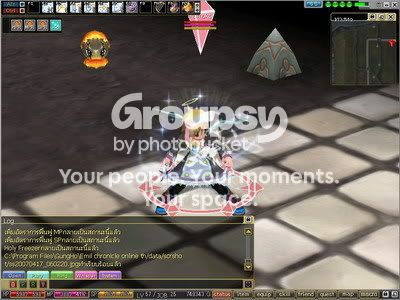

[ :•: Bard :•: ] ไม่ได้ทำต่อแล้วนะ = w = ( นานแล้วแหละ )
 โดย ECO » จันทร์ 15 ต.ค. 2007 10:38 pm
โดย ECO » จันทร์ 15 ต.ค. 2007 10:38 pm
Enjoyzy เขียน:อยากเล่น Bard หงะ แต่ไม่รู้ เอาskillไหนจาก Druid ติดไปด้วย ช่วยแนะนุม หน่อยงิ ~*
ที่เราคิด ก็มี Ares กะ rouse body แค่นี้เองป่ะ ?
พอดีตอนนี้ 65/30 อ่ะ ไม่รุจะเล่นไง สับสนชีวิต . . แต่อยากเล่น Bard มากมาย
ปล.อยากเปนนักดนตรี ฮ่าฮ่า ~*
ข้าน้อยว่าเล่น JOB 50 ไปเถอะจ้า ^^
สกิลที่ข้าน้อยคิดว่าน่าจะ โอนไปก็มี
Ares Active Job Lv.20 Max Lv.10 O_o
1ในสุดยอดสกิลเจ๋งของดรูอิดที่ ฮีลพร้อมทั้งแก้อาการผิดปกติทุกชนิดในเวลาเดียวกันของเป้าหมาย
Lv.1-10 Mp used Lv.1 20 แล้วก็ +2 ทุกๆเลเวลนะ ที่ Lv.10 38
%รักษาอาการผิดปกติก็ Lv.1 40% แล้วก็ +5% ทุกๆเลเวล ที่ Lv.10 85%
ส่วนความแรงในการฟื้นฟู HP ก็ Lv.1 ไม่มี แล้วก็ทุก 2Lvต่อไปจะ = 1Lvของ Heal ที่ Lv.10 = Heal Lv.5 เลยแหละ
*เทียบกันแล้ว Heal Lv.5 ใช้ mp 35 Ares Lv.10 ใช้ mp 38 ต่างกันแค่ 3 เอง
*รู้สึกจะไม่มี Dealy Skill เพราะงั้น กดยิกๆได้เลย O_o (ก็เปลืองเลย 555+)Holy Feather Active Job Lv.25 Max Lv.5

เป็นสกิลที่...ใครจะเล่น Druid แล้วไม่อัพนี่...เสียชาิติ Druid จิงๆ เพราะว่าสกิลนี้จะทำให้
Party Member ฟื้นฟู HP MP SP เร็วขึ้น โดยที่ไม่ต้องนั่งด้วยแหละ เดินๆก็ฟื้น
*ระยะสกิล = 7x7 รอบตัวผู้ร่าย
Lv.1-5 Mp Used / Skill Duration(S) 32/60 35/75 38/90 41/105 44/120
*ฟื้นฟูมากน้อย ขึ้นอยู่กับค่า Max ของแต่ละชนิดของเรา
*มันติดสถานะ Holy freezer มาด้วยอ่ะ คาดว่าเป็นสถานะแสงที่ช่วยให้ SH กว้างขึ้น
แล้วก็ การฟื้นฟู HP เพิ่มขึ้น (ก็ใช้ Ares แล้วมันแรงขึ้นหง่ะ)
*เหมือนว่าสกิลยังบัคอยู่ ไม่มีการฟื้นฟู HP แต่อย่างใด (แต่ MP SP ฟื้นฟูนะ เร็วด้วยสิ
ที่คำอธิบายก็เขียนไว้แค่ SP MP แต่ตอนใช้สกิลมันมี HP ขึ้นมาด้วยนะ ดูรูปสิ)Rouse Body Active Job Lv.28 Max Lv.5
เพิ่ม STR/Vit/Agi ให้กับเป้าหมายระยะเวลาหนึ่ง ถ้าเป้าหมายเป็นPet
จะเพิ่มพลังโจมตี การหลบหลีกระยะประชิด การป้องกันทางกายภาพแทน
Lv.1-5 Mp used ที่ Lv.1 12 แล้ว +2 ไปเรื่อยๆ ที่ Lv.5 20
Lv.1-5 STR/VIT/AGIที่เพิ่ม = 3/4/7 4/5/9 5/7/11 6/9/13 8/10/15
Lv.1-5 Skill Duration(S) 15 20 25 27 30Soul of Light Passive Job Lv.30 Max Lv.1
สกิลดี๊ดี ทำให้เวลาเราไป Possession กับใคร คนๆนั้นจะเก่งขึ้นจ้า
*จะเพิ่ม stat อะไรเท่าไหร่นั้น ขึ้นอยู่กับการ Possession ของเราว่า ทำที่จุดไหน
*ตาราง Possession จ้าาาRouse Mental Active Job Lv.33 Max Lv.5
เพิ่ม DEX/INT/MAG ให้กับเป้าหมายระยะเวลาหนึ่ง ถ้าเป้าหมายเป็นPet
จะเพิ่มพลังโจมตีเวทย์มนต์ พลังป้องกันเวทย์มนต์ พลังป้องกันจาก Abnormal Status
Lv.1-5 Mp used ที่ Lv.1 12 แล้ว +2 ไปเรื่อยๆ ที่ Lv.5 20
Lv.1-5 DEX/INT/MAG ที่เพิ่ม = 6/6/5 8/7/6 10/8/7 12/10/9 14/11/10
Lv.1-5 Skill Duration(S) 15 20 25 27 30Light of Heaven Active Job Lv.40 Max Lv.5
สกิลโจมตีด้วยพลังแห่งแสงขนาดกว้างรอบตัวเราใส่พวกอันเดด
*ระยะสกิล = 7x7 ช่อง รอบตัวผู้ร่ายสกิล
*Turn Undead มีผลต่อความรุนแรงของสกิลนี้
*เป็นสกิลที่ยังไม่ได้ลองเหมือนกันเพราะอัพไม่ถึง แต่มีคนบอกว่า เบา และไม่ดี
แต่ข้อมูลที่เราไปหามาเค้าบอกว่า ถ้า Min M.atk เรามีค่าถึง 640 แล้ว จะสามารถยิง
Rubunanทีเดียวตายเลยหล่ะ (ด้วยสกิลเลเวล 1 ด้วยมั้ง โหแรงจังแต่กว่าจะได้ก็คง70+)


อานนี้คือเท่าที่ค่าน้อยอ่านๆมาอ่า แต่ข้าน้อยยังเปง Vates อยู่เรยแต่ก็มวิเคราะห์ให้ฟังละกานคือไอเรื่องสกิล
- Ares
- Holy Feather
- Rouse Body
- Rouse Mental
ตรงนี้ถ้าเอา 4 สกิลคือเปลียนตอน Job 40 นะจ้า
!!! แต่เดี่ยวก่อนถ้าเพื่อนๆ เล่นถึง Job 50 !!! เรามีตัวเลือกมาเสนอ
1. สำหรับคนที่ชอบสิงเปงชีวิตจิตใจ
คือสกิล
- Soul of Light
2. ชอบบู๊ เองก็
- Light of Heavn
ก็ลองเอาไป พริจารณากานดูน้าจ้า ถ้าเปง Durid แร้วคิดว่าอาจจะลองอัพสกิลให้ได้ทุกสกิลแร้วเอาไปลงดูผลกาน >< แต่ข้าน้อยมะค่อยมีเวลาเล่นหงะ ><"[/quote]
- ECO
- Dark Warrior

- โพสต์: 276285
- ลงทะเบียนเมื่อ: พุธ 26 ต.ค. 2011 9:31 pm
 โดย ECO » อังคาร 16 ต.ค. 2007 9:36 am
โดย ECO » อังคาร 16 ต.ค. 2007 9:36 am
rouse body กับ rouse mental เวลาใช้ แล้วสกิลมันทับกัน fusion และสกิลpop หรือป่าวคับ แบบ เพิ่ม mag ด้วย rouse mental แล้ว ใช้ สกิลpop ต่อ มันจะเพิ่ม 2 อย่างป่าว แบบ ว่า rouse mental ก้อ+10 ใส่ pop อีก เป็น +20 อะไรงี้ป่าว
- ECO
- Dark Warrior
- โพสต์: 276285
- ลงทะเบียนเมื่อ: พุธ 26 ต.ค. 2011 9:31 pm
ผู้ใช้งานขณะนี้
กำลังดูบอร์ดนี้: ไม่มีสมาชิก และ บุคคลทั่วไป 4 ท่าน